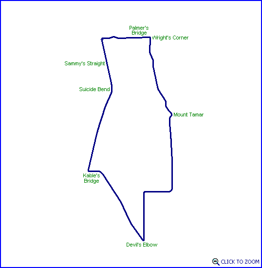

Vale
Street Circuit (1931-1937)

| Length | 7.230 Miles // 11.635 km |
| Direction | 1931-1934: Anticlockwise 1935-1937: Clockwise |
Contact Information |
|
| Address | The circuit is no longer operational |
| Telephone | |
| Website | |
Lasted Updated: 13 February 2003 20:01:14 GMT Standard Time